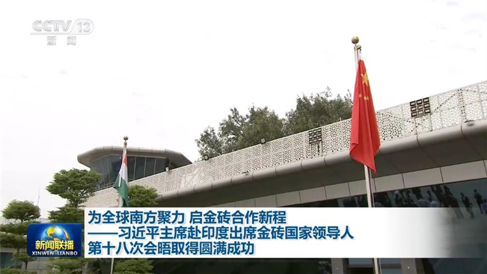
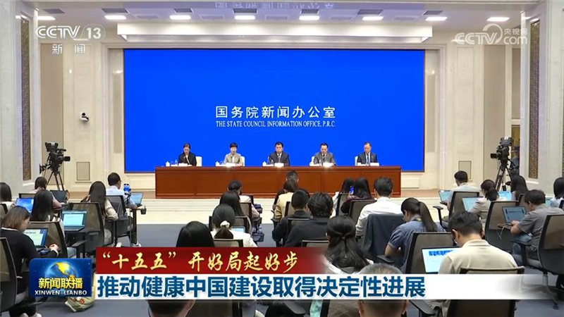
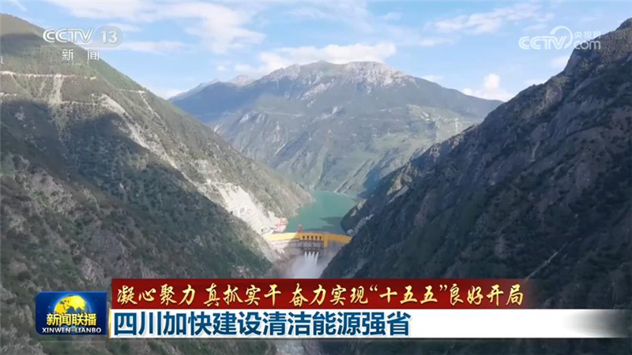
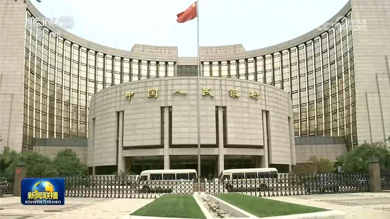
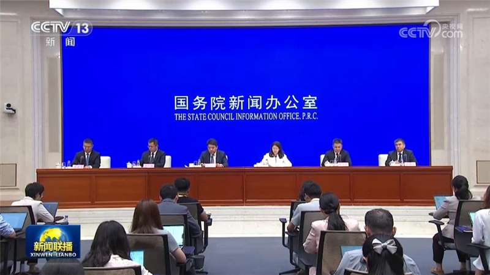
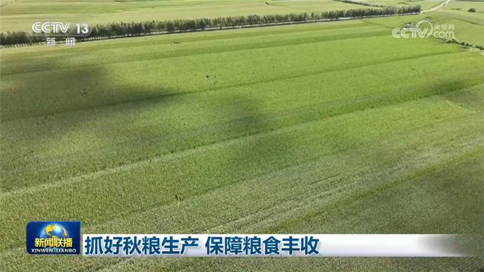
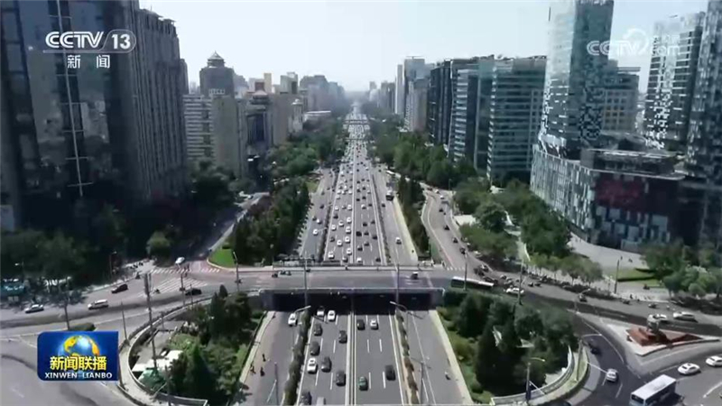
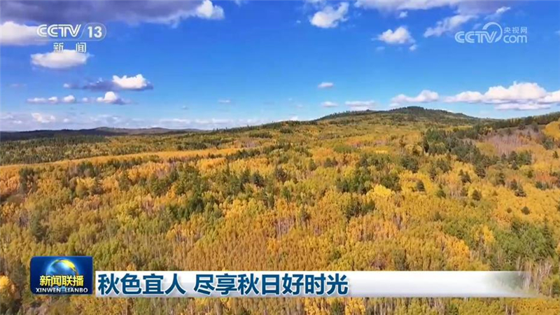
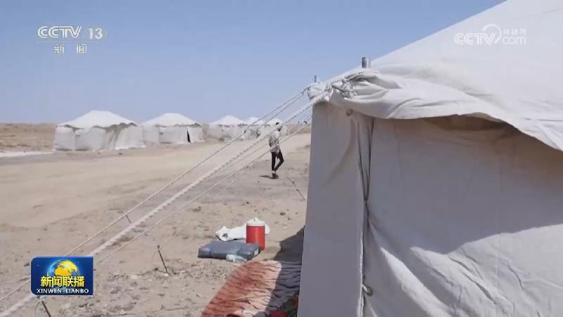

01
习近平结束出席金砖国家领导人第十八次会晤回到北京
9月13日晚，国家主席习近平圆满结束出席金砖国家领导人第十八次会晤回到北京。

9月13日晚，国家主席习近平圆满结束出席金砖国家领导人第十八次会晤回到北京。

9月12日至13日，国家主席习近平应邀赴印度出席金砖国家领导人第十八次会晤。行程结束之际，中共中央政治局委员、外交部长王毅向随行记者介绍此访情况。
本台播发央视快评《把握历史主动 壮大全球南方力量》。

国务院新闻办公室今天（9月14日）举行“开局起步‘十五五’”系列主题新闻发布会，国家卫生健康委等单位介绍推动健康中国建设取得决定性进展有关情况。

“十五五”规划纲要提出，深入实施能源安全新战略，加快构建清洁低碳安全高效的新型能源体系，建设能源强国。“十五五”开局之年，四川扩大清洁能源开发规模，加速新型电网建设，推动清洁能源就近消纳，加快建设清洁能源强省。

中国人民银行今天（9月14日）公布的数据显示，8月末，广义货币（M2）余额356.81万亿元，同比增长7.5%；社会融资规模存量为464.8万亿元。其中，对实体经济发放的人民币贷款余额278.63万亿元，同比增长5%。我国金融总量合理增长，社会融资条件保持宽松，为经济稳定增长和高质量发展营造了适宜的货币金融环境。

记者从国务院新闻办公室今天（9月14日）举行的政策例行吹风会了解到，针对造成中小企业回款难的堵点难点问题，今后国家将继续健全行业账款支付规则，分行业明确合理账期。引导龙头企业率先发布并践行对中小企业“60日付现承诺”。发挥央企国企及时支付表率作用。加强大型企业支付行为监管；对故意拉长账期的大型企业开展联合约谈整治。
9月10日11时15分许，中国船舶集团青岛北海造船有限公司一艘外籍货轮靠港维修期间发生火灾，造成25人死亡、5人受伤。为认真贯彻落实习近平总书记重要指示精神，按照李强总理等中央领导同志批示要求，根据国家有关法律法规规定，国务院成立山东青岛中国船舶集团青岛北海造船有限公司“9·10”重大火灾事故调查组，由应急管理部牵头，外交部、工业和信息化部、公安部、交通运输部、国务院国资委、全国总工会、国家消防救……

当前，全国秋粮全面进入产量形成关键期，各地落实落细各项措施，全力以赴抓好秋粮生产，奠定秋粮丰收基础。

工业和信息化部、国家发展改革委等九部门近日发布了《智能网联新能源汽车产业发展“十五五”规划》，提出到2030年，我国智能网联新能源汽车全产业链优势进一步巩固，进入世界汽车强国行列，国内市场新能源乘用车、商用车在各自领域新车总销量的占比分别达到70%、40%；具备自动驾驶功能的汽车实现规模应用，在高速公路、城市快速路、部分城市道路等场景实现高度自动驾驶。
今年以来，我国县域商业设施持续完善，商品与服务供给不断丰富，县域居民消费呈现加速扩容提质的良好态势。
由中央宣传部、中央网信办等十部门联合举办的2026年国家网络安全宣传周今天（9月14日）在山东济南开幕，今年的主题是“智能时代网安护航”。在开幕式上，网信部门发布了《人工智能安全治理框架》3.0等重要成果，同步举办网络安全和信息化人才招聘会、网络安全技术应用体验区等供需对接和技术推广活动。

眼下秋意渐浓，各地因地制宜推出特色赏秋路线，人们在斑斓秋色中，尽享秋日好时光。
《军营理论热点怎么看·2026》印发全军

也门胡塞武装13日发布声明称，过去24小时，沙特阿拉伯出动F-15战机对也门塔伊兹省、拉赫季省、焦夫省等6个省份发动了58次空袭。
阿曼和伊朗宣布推迟举行地区会议